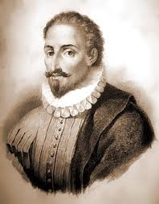

Cervantes

.Có thể nói là tôi đã gặp Don Quixote, một con người ở xứ La Mancha ở Tây Ban Nha, tại giảng đường của một trường trung học ở một thành phố nhỏ, cách thời ông sống đến 400 năm và cách quê hương ông hàng ngàn dặm khi mà các học sinh sắp ra trường hát lên bài hát Giấc mơ không thể có, một bài dân ca dựa trên câu chuyện về Don Quixote.
Trong khi vật lộn với giấc mơ của đời mình, có lần tôi quyết định tìm hiểu thêm về nhân vật huyền thoại này. Trong những thư tịch về ông có cuốn Nhà hiệp khách tài trí Don Quixote của La Mancha mà người ta có thể tìm thấy ở các thư viện công cộng. Cuốn sách nổi tiếng này được xuất bản lần đầu tiên làm hai phần vào năm 1615, và từ ấy đến nay đã được tái bản đến 2.000 lần bằng 60 thứ tiếng, từ tiếng Ả Rập đến tiếng Triều Tiên.
Có thể nói chắc rằng truyện kể về Don Quixote được kể ra bằng nhiều thứ tiếng nhất trên thế giới, trừ cuốn Kinh Thánh. Hình ảnh Don Quixote không thể bị bó hẹp trong một đất nước thời gian riêng biệt nào – thông qua những cuộc phiêu lưu đầy tính bi hài mà ông dấn mình vào, ông đã khéo léo làm sáng tỏ cái thân phận con người đến nỗi Thomas Mann, nhà văn lớn của nước Đức, đã mệnh danh cho ông là “biểu tượng của nhân loại”. Những thành ngữ như “đấu thương với cối xay gió” (nói đến một trong những chiến tích của ông) hay “cái chất Don Quixote” đã trở thành từ ngữ trong nhiều ngôn ngữ.
Có thể khi người ta còn trẻ, thì Don Quixote có ý nghĩa rất nhiều. Nhưng khi người ta quá tuổi tứ tuần hay ngũ tuần, thì người ta thường coi chuyện mộng mơ chỉ là trò trẻ con. Những điều khôn ngoan mà con người thu nhận được thì ở thời trẻ là những ước mơ, còn đối với tuổi già là ký ức. Trước nỗi kinh hoàng của gia đình và những bạn bè vốn có đầu óc thực tế, S.A-Schrelner (Mỹ) đã bỏ một việc làm đảm bảo để thử sức trong một cái nghề phiêu lưu là nghề viết văn. Chính thế đối với ông thật là một niềm vui khi phát hiện ra nhân vật thời trung cổ này, người mà xem ra được trang bị tồi hơn ông nhiều, lại dám theo đuổi những giấc mơ và dám nhận mọi điều xảy ra cho cuộc phiêu lưu của mình.
Nào hãy nhớ lại chuyện Don Quixote. Một nhà quý tộc thôn quê, một Hidalgo, sống với một người quản gia và đứa cháu họ trong một làng quê không tên tuổi vùng La Mancha. Tình cảnh của ông quí tộc này khốn quẫn đến nỗi phải bán đất đi để lấy tiền mua sách. Ông thì cao và gầy như hạc, đôi má thì hóp lại, tóc đã hoa râm. Ông thường miệt mài đọc lại những chuyện ly kỳ thời hiệp sĩ, thời mà những hiệp sĩ lang thang thường lang bạt đây đó ở các vùng quê để cứu trợ những cô trinh nữ trong cảnh hiểm nghèo, giết chết những con ác long hay những người khổng lồ, và tạo lập nên những giang sơn riêng của mình. Lấy nguồn cảm hứng – hay phát rồ lên – vì đọc sách, ông quyết định lên đường làm những chuyến phiêu lưu như những hiệp khách thời xưa, mặc dầu ông chỉ có mỗi một bộ áo giáp cũ kỹ xộc xệch mặc lên kêu cọt kẹt do đời trước để lại, và một con ngựa mà ông đặt tên là Rocinanite, nó cũng già yếu và gầy guộc như ông.
Một sự thôi thúc phổ biến của con người là theo đuổi một mẫu hình nào đó để thoát khỏi cuộc sống tầm thường nhạt nhẽo và chính vì thế mà người ta, từ thế hệ này đến thế hệ khác, chẳng những chấp nhận sự rồ dại của Don Quixote, coi là điều chẳng có gì khó hiểu mà còn đi đến chỗ nghi ngờ rằng liệu Don Quixote có phải chỉ là nhân vật thuần túy có tính chất tưởng tượng trong đầu óc Miguel de Cervantes Saavedra không nữa. Tuy ông nói là Don Quixote chỉ là “đứa con tinh thần” của ông, Cervantes đã cố tình tạo ra một sự lẫn lộn khi nói rằng ông đã tình cờ đọc những chuyện phiêu lưu về Don trong một bản thảo của một sứ giả Ả Rập không xuất bản. Nhưng điều mà nói chung người ta thừa nhận là Don Quixote chỉ là một nhân vật hoàn toàn có tính chất hư cấu và nhân vật này là hiện thân của chính tác giả.
Cho đến lúc cầm bút viết cuốn truyện này, Cervantes, lúc bấy giờ vào trạc ngũ tuần, cũng đã từng đấu thương với cối xay suốt cả đời mình. Tìm vinh quang của người chiến sĩ, ông bị thương trong trận đánh Lopanto và bị liệt cánh tay trái. Trong gần sáu năm liền ông là tù nhân của bọn cướp biển Thổ ở Alger. Thế rồi ông trở thành một nhà văn không tên tuổi và một thời gian làm viên chức khiến ông phải hai lần vào tù vì việc giữ sổ sách đáng nghi ngờ, và đã lao động đến kiệt sức để hoàn thành cuốn Don Quixote sáu tháng trước khi qua đời vào tuổi 68. Do vậy Cervantes có lý do để tìm kiếm những cuộc phiêu lưu dũng cảm trong tâm trí mình, và lại còn có đủ lý do để chấp nhận những thất bại.
Điều làm cho hầu hết chúng ta không dám chấp nhận những thách thức mới trong cuộc sống – là điều sợ sự thất bại, dù hậu quả của nó là đối với sức khỏe, tinh thần hay sự cười chê của người khác. Nhưng Don Quixote, cũng giống như Cervantes, đã từng nếm đủ mùi thất bại.
Cuộc phiêu lưu chống cối xay gió là một trong những chiến tích đầu tiên của Don Quixote và là một sự thất bại nổi tiếng nhất của ông. Có một người hầu đi theo, Sancho Panca, một nông dân béo lùn cưỡi trên lưng con lừa, vốn là một kẻ cắm rễ sâu vào thực tế trong khi ông chủ của mình lại huyền hoặc vì những ý tưởng ngông cuồng. Vào một sáng sớm Don Quixote đang chu du qua châu thổ La Mancha. Bỗng ông thấy một cụm cối xay gió mà ông cho là những tên khổng lồ không theo luật pháp với những cánh tay dài ngoãng là những kẻ đồng minh. Sancho cho rằng đấy chỉ là những cối xay gió mà thôi, nhưng Quixote thì nhất định chả chịu nghe. Ông cầm ngang ngọn giáo và thúc con ngựa chiến đi nước kiệu tiến lên, và thế rồi cánh quạt cối xay gió đã làm cho ngọn giáo của ông gãy nát và làm cho chàng hiệp khách và lẫn con ngựa bò lê bò càng ra. Còn chàng hiệp sĩ thì lại nhún vai và bảo: “Ôi thắng bại là chuyện thường tình của kẻ chiến chinh. Khi tôi nghĩ về điều đó, tôi đoán chắc rằng đây hẳn là công trình của một tên phù thủy đã biến tên khổng lồ thành cối xay gió để đả bại tôi”.
Bí mật vĩ đại của Don Quixote là ở chỗ lúc nào ông cũng chỉ nhìn thấy những mơ ước của mình, bất chấp những nỗi hoài nghi hay giễu cợt của những người khác. Nhưng nhà triết học Tây Ban Nha Jose Ortegay Gasset đã viết trong cuốn Những suy tư về Don Quixote: Sự thực là có những con người quyết không chịu hài lòng với thực tại. Những người này nhằm thay đổi tiến trình của sự việc và chối bỏ việc lặp lại những hành động mà phong tục, truyền thống mà những bản năng sinh vật đòi hỏi. Những người đó chúng ta gọi là những anh hùng.
Đối với bất kỳ ai trung thực với chính mình thì cái nguy cơ đe dọa lớn nhất là tự hoài nghi: Nhìn và thừa nhận thực tế của tha nhân. Don Quixote đã phải diện đối diện với mối đe dọa đó khi ông lên đường đến thăm Aldonsa Lovenzo, một cô gái nông dân vạm vỡ mà có lần ông đã vương tình và bây giờ thì ông lý tưởng hóa một cách lãng mạn là một giai nhân tuyệt sắc có tên gọi là Dulcinea. Người đầy tớ Sancho đã sớm nhận thấy nàng Aldonza này thực vốn khác xa “người tiên trong mộng” của ông chủ mình đến mức nào. Và trong khi họ đứng ngoài rìa làng để chờ đợi lúc thích hợp đến thăm nàng Dulcinea thì Sancho biết tỏng là ông chủ mình đã hóa rồ và hy vọng có thể đánh lừa được ông ta.
Bất thần Sancho trông thấy ba cô gái nhà quê thô thiển đang cưỡi lừa tiến lại. Nắm lấy thời cơ, Sancho bảo Don Quixote rằng nàng Dulcinea, trong xiêm áo rực rỡ và những trang sức đầy châu báu ngọc ngà đang cưỡi ngựa đến với nàng hầu. Nhưng khốn nỗi lần này cặp mắt của Don Quixote lại quá tỏ tường và thấy ra hết cả. Ông lại còn ngửi thấy một thứ cay xè như mùi tỏi bốc ra từ một cô Dulcinea. “Tên phù thủy độc địa hại tôi đã dùng máy và thác nước để che mờ mắt tôi đi, và chính nó chứ chả phải ai khác đã biến nhan sắc tuyệt trần của em thành một mặt của một cô gái nhà quê đần độn”, Don Quixote nói với cô gái đang ngơ ngác.
– Ông nội ơi! Thôi đi đừng có lắp bắp nữa. Ông tránh ra chúng tôi nhờ. Cô gái bảo.
Những cô gái bỏ đi rồi, nhưng Don Quixote chẳng những không hề thất vọng, mà qua sự nếm trải này càng thấy thức dậy trong lòng niềm cảm hứng cho những chiến tích của lòng gan dạ.
Một con người hoàn toàn miệt mài theo đuổi những giấc mơ của mình có thể trở thành một thằng điên dưới con mắt của kẻ khác. Nhưng Don Quixote đã đưa hết năng lực điên rồ của mình để uốn nắn lại những gì không hợp nhãn, và như vậy ông thuộc vào hàng ngũ những thiên thần. Cuối cùng, sự điên rồ cũng sẽ được tha thứ nếu như, trong khi phụng sự những ước mơ của mình, người ta cũng góp phần vào phục vụ nhân quần.
Don Quixote và Sancho tình cờ gặp một toán người mang xiềng xích bị giải đi, giống như những tên nô lệ. Sancho thì chỉ ra rằng đấy là những tên phạm tội đáng bị trừng phạt. Nhưng nhà hiệp sĩ lại đến hỏi phạm nhân và cho rằng hình phạt này – cái mà chính Cervantes đã từng chứng kiến khi ở trong quân ngũ – là quá nặng đối với tội lỗi của họ. Thế là ông dùng thương đâm vào tên lính gác và tạo ra một cuộc loạn đả làm cho những phạm nhân tháo được xiềng xích; họ đuổi những người lính gác tháo chạy, và rồi quay lại cướp bóc, tước đoạt chính ân nhân mình và người đầy tớ và dần cho họ một trận nên thân.
Liệu Don Quixote đã lập được một chiến tích nào không? Ông quả đã lập được, và lập được những chiến công đẹp nhất mà bất cứ ai cũng hằng mong mỏi – sự chiến thắng đối với bản thân mình.
Có một bữa Don Quixote và Sancho gặp một chiếc xe chở hai con sư tử dữ tợn trong chuồng. Don Quixote ra lệnh cho người canh sư tử mở cửa chuồng để xem “liệu ông có phải là người mà sư tử có thể uy hiếp nổi không?”. Ông xuống ngựa và đứng trước chuồng giam con sư tử lớn. Người canh sư tử, hoảng hồn vì sự xuất hiện kỳ dị của con người trong bộ áo giáp, liền mở cửa chuồng. Con sư tử chẳng thiết gì tỏ ra ta đây là vị chúa sơn lâm, quay lưng lại Don Quixote và hiền lành phủ phục xuống.
Thất vọng, Don Quixote bảo người canh sư tử lấy gậy để kích động con thú, nhưng người này không chịu và bảo: “Đảm lược của ngài vững như bàn thạch, theo tôi nghĩ thì không chiến sĩ dũng cảm nào lại buộc phải làm hơn cái điều là thách thức kẻ thù và chờ đợi họ trên bãi đấu. Còn nếu đối thủ ông ta không chịu đến, thì chính danh dự người đó mới bị tiêu ma”.
Quay lại phía Sancho, Don Quixote hỏi: “Anh nghĩ thế nào về điều đó, Sancho? - Có thứ bùa mê nào lại có thể đương đầu được với lòng dũng cảm thật sự. Bọn phù thủy có thể lấy đi của ta những dịp may, nhưng đừng hòng tước đi sức mạnh và lòng can đảm”.
Chúng ta có thể rút ra bài học tâm niệm qua điều này và thường trở nên can đảm hơn từ bài học này. “Từ nay, tôi không còn quá quan tâm đến việc những cuộc phiêu lưu trong đời mình sẽ là điều thành công hay thất bại trong mắt nhìn của những người khác. Mà tôi cũng không co rúm người lại khi có người nào đó bảo tôi mang cái chất “Don Quixote” trong người. Tôi kiêu hãnh nhận lấy từ này”, nhà văn Mỹ Schrelner đã nói thế.